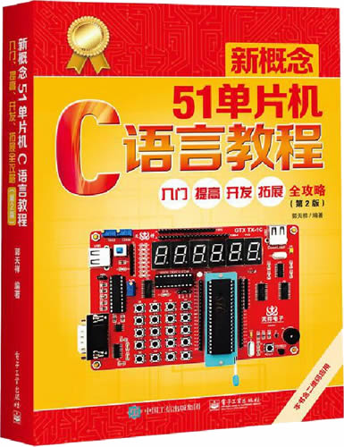

首页 > 书籍下载
《新概念51单片机C语言教程》第2版PDF下载（高清完整版）
|  | 作者：郭天祥 |
| 出版时间：2018年01月01日 | |
| 出版社：电子工业出版社 | |
| 书号ISBN：9787121320224 | |
| 总页数：460 | |
| 总字数：73.6W |
这是一本非常经典的 51 单片机书籍，内容由浅入深、循序渐进，实例丰富，已经累计发行超过 22W 册，适合有一定 C 语言、对单片机开发感兴趣的读者。
这里提供的是《新概念51单片机C语言教程》第2版的高清 PDF 下载，内容完整，附带目录标签。
和其它同类的单片机书籍相比，这本书的特色总结为以下几点：
- 书中的大部分内容是作者在科研和教学实践过程中总结出来的，融入了作者多年的项目实战经验；
- 这本书的内容非常丰富，实用性强，书中的很多 C 语言代码可以直接应用到实际开发中。
- 为了降低读者的学习难度，作者开发了与书本内容配套的 TX_1C 单片机实验版，读者可以跟随书本内容边学边练，实现快速入门 51 单片机开发。
认真读完这本书，读者将具备以下 3 个方面的能力：
- 掌握 51 单片机的硬件结构；
- 掌握 51 单片机的各种功能和应用；
- 掌握在 51 单片机上进行 C 语言编程的方法。
一位跟随这本书学习 51 单片机的读者，这样评价它：
之前学习过单片机，但是一直都没有真正弄懂它。买了这本书，已经学习了几晚，感觉跟之前书籍确实有很多不一样的地方，尤其是对一些知识点的理解。我相信只要按照这本书的要求学下去，我一定会成功的学会这门技能。对于想入门单片机的读者，真是一本好书，值得拥有！
书籍目录
- 第1章 基础知识 2
- 1.1 单片机概述 2
- 1.2 51单片机外部引脚介绍 8
- 1.3 电平特性 11
- 1.4 二进制和十六进制 12
- 1.5 二进制的逻辑运算 13
- 1.6 单片机的C51基础知识介绍 15
- 第2章 Keil软件使用及流水灯设计 19
- 2.1 Keil工程建立及常用按钮介绍 19
- 2.2 点亮个发光二极管 24
- 2.3 while语句 35
- 2.4 for语句及简单延时语句 37
- 2.5 Keil仿真及延时语句的精确计算 38
- 2.6 不带参数函数的写法及调用 42
- 2.7 带参数函数的写法及调用 44
- 2.8 利用C51库函数实现流水灯 45
- 第3章 数码管显示原理及应用实现 50
- 3.1 数码管显示原理 50
- 3.2 数码管静态显示 51
- 3.3 数码管动态显示 55
- 3.4 中断概念 57
- 3.5 单片机的定时器中断 61
- 第4章 键盘检测原理及应用实现 70
- 4.1 独立键盘检测 70
- 4.2 矩阵键盘检测 76
- 第5章 A/D和D/A工作原理 84
- 5.1 模拟量与数字量概述 84
- 5.2 A/D转换原理及参数指标 85
- 5.3 ADC0804工作原理及其实现方法 92
- 5.4 D/A转换原理及其参数指标 98
- 5.5 DAC0832工作原理及实现方法 104
- 5.6 DAC0832输出电流转换成电压的方法 109
- 第6章 串行口通信原理及操作流程 110
- 6.1 并行与串行基本通信方式 110
- 6.2 RS-232电平与TTL电平的转换 113
- 6.3 波特率与定时器初值的关系 115
- 6.4 51单片机串行口结构描述 118
- 6.5 串行口方式1编程与实现 120
- 6.6 串行口打印在调试程序中的应用 123
- 第7章 通用型1602、12232、12864液晶操作方法 131
- 7.1 液晶概述 131
- 7.2 常用1602液晶操作实例 132
- 7.3 常用12232液晶操作实例 139
- 7.4 常用12864液晶操作实例 148
- 第8章 I2C总线AT24C02芯片应用 157
- 8.1 I2C总线概述 157
- 8.2 单片机模拟I2C总线通信 159
- 8.3 E2PROM AT24C02与单片机的通信实例 162
- 第9章 基础运放电路专题 170
- 9.1 运放概述及参数介绍 170
- 9.2 反相放大器 171
- 9.3 同相放大器 172
- 9.4 电压跟随器 173
- 9.5 加法器 173
- 9.6 差分放大器 174
- 9.7 微分器 174
- 9.8 积分器 175
- 9.9 比较器 176
- 第10章 定时器/计数器应用提高 180
- 10.1 方式0应用 180
- 10.2 方式2应用 181
- 10.3 方式3应用 183
- 10.4 52单片机定时器2介绍 185
- 10.5 计数器应用 191
- 第11章 串行口应用提高 195
- 11.1 方式0应用 195
- 11.2 方式2和方式3应用 197
- 11.3 单片机双机通信 199
- 11.4 单片机多机通信 206
- 第12章 指针 215
- 12.1 指针和指针变量 215
- 12.2 指针变量的运算 218
- 12.3 指针与数组 219
- 12.4 指针与函数 223
- 12.5 指针与字符串 227
- 12.6 指针数组与命令行参数 229
- 12.7 指针小结 233
- 12.8 C51中指针的使用 236
- 第13章 利用51单片机的定时器设计一个时钟 240
- 13.1 如何从矩阵键盘中分解出独立按键 240
- 13.2 原理图分析 241
- 13.3 实例讲解 242
- 第14章 使用DS12C887时钟芯片设计高精度时钟 250
- 14.1 时钟芯片概述 250
- 14.2 DS12C887时钟芯片介绍 250
- 14.3 如何用TX-1C实验板扩展本实验 256
- 14.4 原理图分析 257
- 14.5 实例讲解 257
- 第15章 使用DS18B20温度传感器设计温控系统 268
- 15.1 温度传感器概述 268
- 15.2 DS18B20温度传感器介绍 269
- 15.3 实例讲解 275
- 第16章 太阳能充/放电控制器 280
- 16.1 控制器原理图分析 281
- 16.2 控制器板上元件介绍 284
- 16.3 实例讲解 286
- 第17章 VC、VB（MSCOMM控件）与单片机通信实现温度显示 303
- 17.1 VC MSCOMM控件与单片机通信实现温度显示 303
- 17.2 VB MSCOMM控件与单片机通信实现温度显示 309
- 第18章 应用单片机内部ADC做电容感应触摸按键 313
- 第19章 使用Altium Designer 14绘制电路图 320
- 19.1 绘制电路板概述 320
- 19.2 建立工程 322
- 19.3 制作元件库 325
- 19.4 添加封装及制作PCB封装库 328
- 19.5 项目编译及生成PCB 331
- 19.6 布线电气特性设置 334
- 19.7 自动布线和手动布线 338
- 第20章 基于Wi-Fi的物联网应用 341
- 20.1 物联网系统架构 341
- 20.2 常用的物联网无线传输技术 342
- 20.3 IoT云平台 343
- 20.4 基于Wi-Fi的嵌入式设备入网方式 347
- 20.5 微软Azure系列IoT物联网开发板 352
- 第21章 电机专题 353
- 21.1 直流电机原理及应用 353
- 21.2 步进电机原理及应用 360
- 21.3 舵机原理及其应用 370
- 第22章 STC8系列单片机介绍 377
- 22.1 STC8单片机的优势 377
- 22.2 ADC数模转换 377
- 22.3 PCA/CCP/PWM应用 379
- 22.4 同步串行外设接口SPI 382
- 22.5 I2C总线 386
- 第23章 常用元器件介绍 391
- 23.1 二极管 391
- 23.2 电容 395
- 23.3 场效应管 399
- 23.4 光耦 403
- 23.5 蜂鸣器 405
- 23.6 继电器 405
- 23.7 自恢复保险 410
- 23.8 瞬态电压抑制器 411
- 23.9 晶闸管（可控硅） 414
- 23.10 电荷泵 416
- 第24章 直流稳压电源专题 417
- 23.1 整流电路 417
- 24.2 滤波电路 419
- 24.3 稳压电路 421
- 24.4 集成稳压模块的使用 423
- 24.5 串联开关型稳压电源 428
- 第25章 运放扩展专题 431
- 25.1 简单低通滤波器 431
- 25.2 “电流-电压”转换电路 431
- 25.3 光电放大器 432
- 25.4 精密电流源 432
- 25.5 可调参考电压源 433
- 25.6 复位稳定放大器 434
- 25.7 模拟乘法器 435
- 25.8 全波整流器和平均值滤波器 436
- 25.9 正弦波振荡器 437
- 25.10 三角波发生器 437
- 25.11 自动跟踪对称电源 438
- 25.12 可调实验电源 439
- 25.13 运放相关术语 441
书籍下载
一键登录，免费下载完整版 PDF，文件名称：《新概念51单片机C语言教程》第2版.pdf